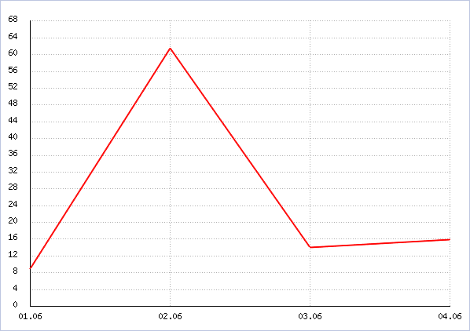
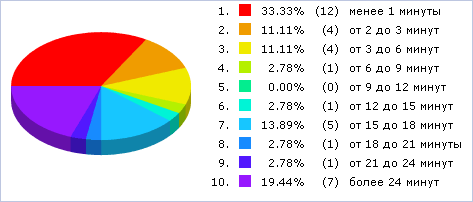

Форма показывает график и круговую диаграмму параметров за выбранный период времени для выбранного сайта.
| Параметр | Описание |
|---|---|
| Период | Период времени, для которого следует отобразить график и круговую диаграмму. |
| Сайт | Сайт, графики внимательности посетителей которого следует отобразить. |
| Показать все условия | Отражает все поля фильтра. |
| Скрыть все условия | Скрывает все поля фильтра, кроме полей по умолчанию. |
Чтобы активировать фильтр и построить графики, нажмите на кнопку Найти. Для отображения всех данных нажмите на кнопку Отменить.


| © «Битрикс», 2001-2008, «1C-Битрикс», 2008 | 1С-Битрикс: Управление сайтом |